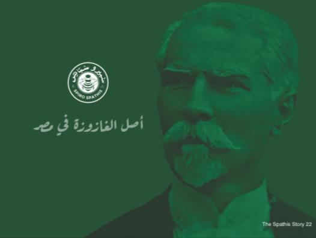

A short history of SPIRO SPATHISThe Spiro Spathis Company was established in 1920 by Spiro Spathis.
a Greek entrepreneur who arrived in Egypt with a vision to introduce new and innovative beverages to the localI llainel！In 1922, the company achieved a major milestone by producina the first-ever. soda drink in Egypt, the Lemonade Flavor.
This marked the beginning of a long ana successful journey for the company, which quickly became known for its commitment to quality and Innovation.
Despite the passing of Spiro Spathis in 1950, his legacy lived on as his family continued to run the business andmaintan une nien Standares ne nao seuIn 1998, the company and its trademark were acquired by MYMCO for food and beverage company (formerly SAPSA), amove that allowed for turther expansion and growth. MYMCO continued to renovate, update, and add new flavors to tne product line, whlle also preserving the company's rich history and tradition.
Today, Spiro Spathis products remain one of the leading high-quality beverage products in Egypt, with a legacy spanning over 100 years.
The company's commitment to excellenceand innovation continues to drive its success, ensuring that it remains a trusted and beloved brand amongconsumers.
In addition to his entrepreneurial spirit, Spiro Spathis was also known for his attention to detail and commitment to his craft.
The unique logo that many people mistake for a fly is actually a bee, which was inspired by Spiro Spathis' work in a beehive. This distinctive logo has become synonymous with the company's identity, representing its commitment to hard work, creativity, and innovation.

The company is the oldest soft drink company in Egypt, with a heritage spanning over a century. Founded in 1920, the company has become more than just a beverage producer; it is a custodian of tradition, an enduring symbol of Egyptian life, and a testament to the nation's historical fabric. Spiro Spathys has weathered the tides of time, evolving alongside the dynamic beverage industry. Over the decades, it has not only quenched thirst but has also become ingrained in the collective consciousness of generations. The fizz in its bottles reflects that of a company deeply woven into the fabric of Egypt's social and cultural identity. Spero Spathys has unexpectedly found itself elevated to a symbol of Egyptian solidarity with the Palestinians. At a time when a national campaign is urging a boycott of Western producers perceived as pro-Israel, Spiro Spathys has become more than just a soft drink company; it has become a rallying point for expressions of sympathy and unity.
Bottles
Bee
Spirospathis